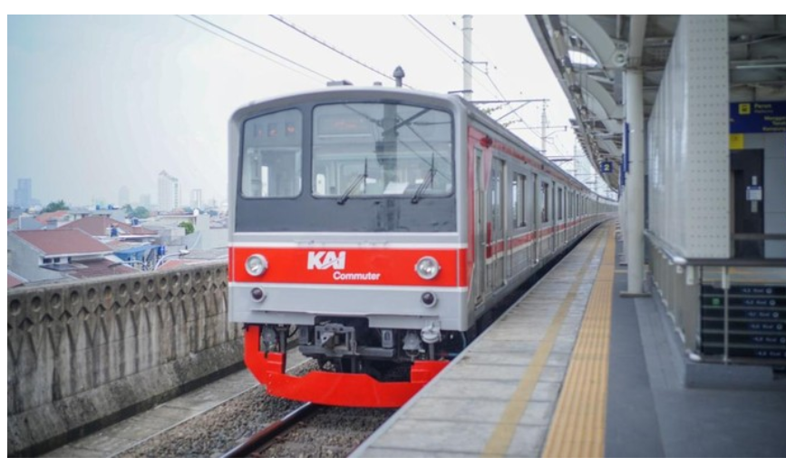
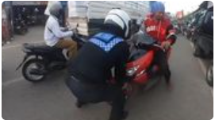

Jakarta
KAI Bantah Pecat Pegawai Buntut Tumbler Penumpang Hilang, Ini Penjelasannya
Jakarta - Kabar pegawai KAI Commuter Indonesia (KCI) dipecat gara-gara botol minum (tumbler) milik penumpang KRL hilang viral di media sosial (medsos). Pihak KCI masih menelusuri kasus tersebut.
"Sebagai tahap awal, tentunya kami melakukan koordinasi kepada pihak mitra pengelola petugas front liner," kata VP Corporate Secretary KAI Commuter Karina Amanda.

Berita terbaru
Lihat semua →

Kisah Pemotor di Cibinong Kena Batunya karena Ngeyel Lawan Arus
Viral Innova Putih Nyalip Lewat Bahu Jalan Berujung Celaka
Prabowo Geleng Kepala Dengar Bupati di Aceh Bilang 'Presiden Seumur Hidup'
Seputar Bali
Lihat semua →Respons Koster soal Permintaan Nusron Agar Warga Bali Pindah ke Luar Pulau
-
48 Menit yang lalu
Koster Pilih Bangun Tangga Alami Ketimbang Lift Kaca di Pantai Kelingking
Seputar jawa
Lihat semua →
15.000 makanan siap saji dari Solo dikirim ke wilayah bencana Sumatera
-
20 Menit yang lalu
Dojang Batmab Blora borong 73 medali di Vasaka Taekwondo Championship 2025